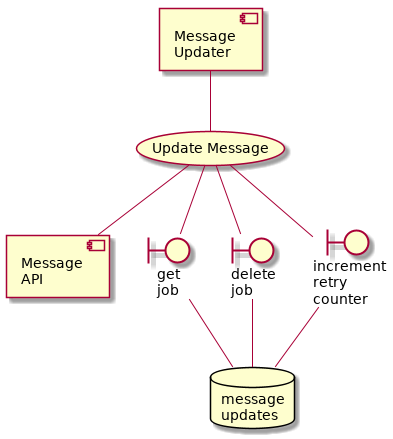

Platform Services¶
These components are involved in message processing regardless of the origin or destination of the message.
Inbound Message Processor¶
This worker processes new messages regardless of if they came from a B2G route (i.e. Public Message API) or a G2G route (i.e. from a G2G Channel).
The code in /intergov/processors/message_processor/ instantiates and runs an InboundMessageProcessor.
-
class
intergov.processors.message_processor.InboundMessageProcessor(bc_inbox_repo_conf=None, message_lake_repo_conf=None, object_acl_repo_conf=None, object_retrieval_repo_conf=None, notifications_repo_conf=None, blockchain_outbox_repo_conf=None)[source]¶ Efficiently iterate over the ProcessMessageUseCase.
![@startuml
component imp [
Inbound
Message
Processor
]
usecase pmuc [
Process
Message
]
imp -- pmuc
boundary post_message_lake [
post
message
]
pmuc -- post_message_lake
database message_lake [
message
lake
]
post_message_lake -- message_lake
boundary post_message_acl [
post
message
]
pmuc -- post_message_acl
database object_acl_repo [
object
ACL
]
post_message_acl -- object_acl_repo
boundary post_message_channel_inbox [
post
message
]
pmuc -- post_message_channel_inbox
database bc_inbox_repo [
channel
inbox
]
post_message_channel_inbox -- bc_inbox_repo
boundary post_job_orr [
post
job
]
pmuc -- post_job_orr
database object_retreval_repo [
object
retreval
]
post_job_orr -- object_retreval_repo
boundary post_message_notifications [
post
message
]
pmuc -- post_message_notifications
database notifications_repo [
notifications
]
post_message_notifications -- notifications_repo
boundary post_channel_outbox [
post
message
]
pmuc -- post_channel_outbox
database blockchain_outbox [
channel
outbox
]
post_channel_outbox -- blockchain_outbox
@enduml](_images/plantuml-890b6ed8f39f3fd256a4171a8ffc2dbbe520f657.png)
-
class
intergov.use_cases.ProcessMessageUseCase(country, bc_inbox_repo, message_lake_repo, object_acl_repo, object_retreval_repo, notifications_repo, blockchain_outbox_repo)[source]¶ Used by the message processing background worker.
Gets one message from the channel inbox and does number of things with it.
dispatch document retreval job (if the message is from a foreign source)
dispatch message sending task to channel-outbox (if the message is from a domestic source)
ensure the message is stored in the message lake
ensure the access control lists are updated for this message
dispatch any WebSub events required for this message
Note: the inbound message may have come from one of two sources: it may be a message from within this country, or it may be a message sent from another country. This use-case works with either message, however it needs to know which country it is working as to get the logic right (that is why it takes a country parameter when it is instantiated).
The message processing task touches quire a few backing services.
Message Updater¶
This worker updates the metadata of existing messages, regardless of the source of the change.
Rather than updating messages directly, other workers dispatch a “message update job” to a queue, and this worker then performs the deed in the message lake (using a patch call on the message API).
-
class
intergov.processors.message_updater.MessageUpdater(message_updates_repo_conf=None)[source]¶ Iterate over message update jobs:
get a job from the queue
after some job validation, update the message using the API
if sucessful, delete the job from the queue
if unsucessful, increment retry counter and reschedule attempt
